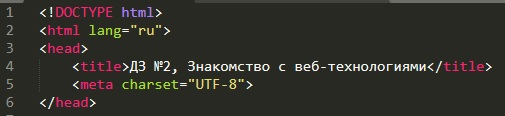
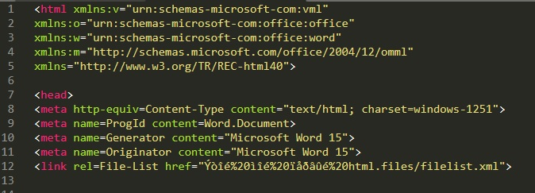

И здесь мои скромные рассуждения о HTML.
В жизни было несколько случаев, когда надо было создать HTML-страничку. Обычно это небольшой мануал по написанной программке.
Как правило, чтобы не заморачиваться, мануал выполнялся в Word'е с последующим "Сохранить как..." в формате HTML.
И правда, чего заморачиваться?))) Вот только Word пихает кучу всякого своего "мусора", без которого html-страничка вполне адекватно воспринимается любым браузером.
Для сравнения - первые строки данной странички в исполнении двух разных редакторов:
| Sublime | Word |
|---|---|
|  |  |
Причём, в варианте от Word показано только начало - закрывающий тэг head находится на строке 80(!!!)
И это не считая блок body...